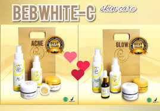

Skincare yang dibuat dari bahan-bahan berkualitas dan dipadu dengan teknologi yang canggih. Harga yang terjangkau serta Aman untuk Bumil dan Busui
seperti yang kita ketahui, saat ini banyak skincare yang menawarkan hasil yang instant, namun mereka tidak mengetahui zat apa saja yang terkandung didalamnya.
bisa saja hasil instant tersebut disebabkan karena reaksi kimia yang berbahaya.
BebwhiteC sudah terdaftar di BPOM, hingga dapat dipastikan bahwa produk ini sudah teruji dan aman.
Produk ini memiliki keunggulan tanpa proses detoks, jadi yang pernah punya riwayat skincare sebelumnya bisa aman menggunakan produk ini.
Tekstur yang lembut dan tidak menimbulkan lengket pada wajah, sehingga produk ini aman digunakan untuk semua jenis kulit dan dapat membual wajah glowing, kenyal dan cerah.
Keunggulan lain dari produk ini juga dapat menghilankan :
♥ Flek
♥ Komedo, jerawat dan bekas jerawat
♥ Kulit menipis dan memerah
♥ Tanda-tanda penuaan
♥ Pori-pori besar